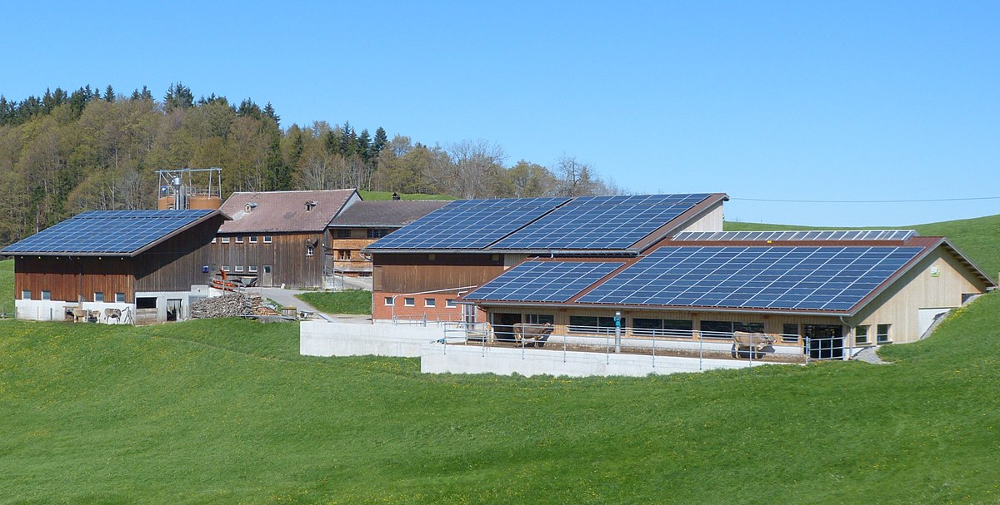

Case Studies
6 Solar Panels Successfully Installed

- Where: On a stable block in West Sussex
- When: September 2011
- Time it took to fit: 2 days
- panels: 16 x 245W
- Estimated annual generation: 3,136kWh
Testimonial: Richard family
“People thinking about going solar, they need to think about how energy is going to increase in the coming years and once I pay off this system, that’s it. I’ll just be paying the minimum on my electricity. Instead of paying our electricity bill, we’re paying for our solar system. "
West Sussex, 2.47kw Solar PV

- 10 x Samsung LPC247 Modules
- 6 panels facing east and 4 facing southReturn on Investment: 34.9%
- Annual Savings: £845
Testimonial: DICKERSON FAMILY
“Sun Kissed Solar has dramatically changed our electricity bill. A year ago it was running up in the 350 range; our last bill was GBP50. It’s really nice to see that I’m making money.”